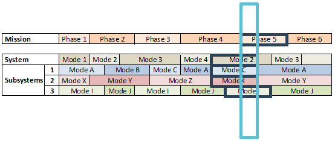
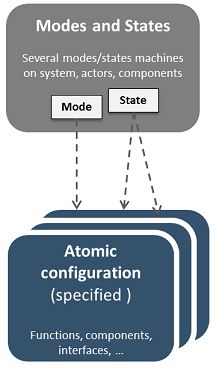
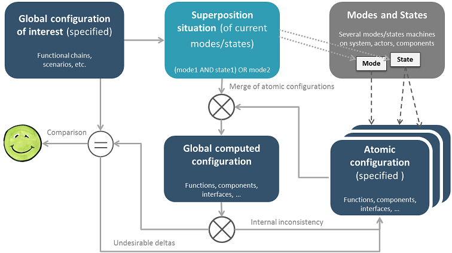

Purpose of the Modes & States viewpoint for Capella is to enrich the capabilities regarding the definition of Modes & States, but also the capabilities in order to analyze their consistency. In order to do so, the concepts of "Configurations" and "Situations" are introduced.

The propose process for analyzing consistency of Modes & States definition is the following:
Insert image of a modes/states machine
Atomic configurations are defined in order to specify the elements (components, functions, ports, exchanges) which are available or not a mode or state. Insert image of a Configuration Elements table and visualization on a LAB diagram
 Insert image of a Mode and Configuration table
As several Configurations can be linked to one Mode or State, consistency of the superposition of all the configuration for each Mode or State need to be checked.
A lot of combinations can be possible based on the definition of the different Modes and States. Only the Situations of Interest are formalized by defining their specific superposition of Modes and States.
For each Situation of Interest, an Expected Configuration is defined in order to define the expected functional content (functional chains, scenarios) for the situation.
Finally, a global configuration is computed from the superposition of the atomic configuration and compared to the expected configuration. The capabilities of the system (in term of components, functions, ports, exchanges) in the situation is compared to the expected functional content (in term of functional chains, scenarios).
